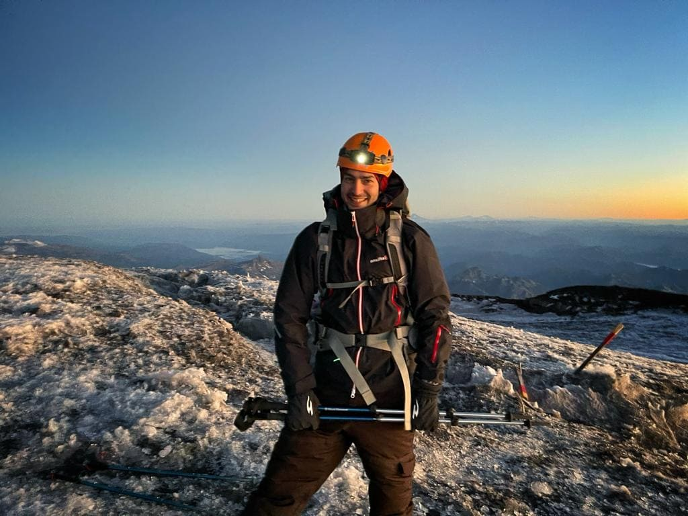
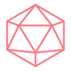
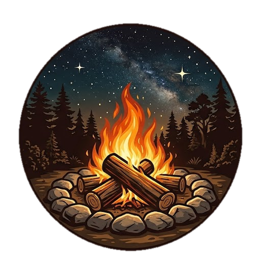
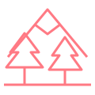

01
Release without fear
Shipping becomes routine, not a gamble. Every deploy is checked automatically, so a bad change is stopped before it reaches your customers.
how: CI/CD pipelines · end-to-end automation
// Test Automation Architect · QA Technical Lead
I'm Mauro, an SDET with 10+ years in software quality. I build automation and performance testing frameworks, define quality strategies, and help teams understand and improve their products.

// why quality
Fewer incidents, happier customers, faster releases. Here's what quality looks like for your business.
Shipping becomes routine, not a gamble. Every deploy is checked automatically, so a bad change is stopped before it reaches your customers.
how: CI/CD pipelines · end-to-end automation
A bug found in testing costs minutes. The same bug found by a customer costs support time, refunds and trust.
how: risk-based strategy · API & UI tests
Launches, campaigns and growth shouldn't take your app down. You'll know how much traffic it can handle before your users find out the hard way.
how: k6 · Locust · JMeter load tests
Plain-language reports show what works, what's broken and what's at risk, so stakeholders can decide without reading code, or error logs.
how: Gherkin scenarios · readable reports
bonus I mentor teams to achieve these quality standards on their own.
// experience
From manual and automated testing to leading quality for whole companies.
Datumsure · doTERRA & Tapestry
Sole QA for the company: quality strategy, automation and performance testing for a client wellness platform and an in-house AI data-analysis product.
Served as the company's sole QA professional, first on doTERRA and then owning quality for Tapestry after the client project ended.
NestJS and Next.js wellness platform using connected health data to inform recommendations for products, healthy habits, and exercise.
Datumsure platform integrating databases from multiple sources and providing users with AI-powered data analysis.
Incluit · iDocket UCMS
Built a Cypress and Cucumber framework running in Jenkins, and introduced k6 performance testing that found several critical defects.
Wazuh · Kibana App
Managed QA planning and defect tracking while staying hands-on, and set up the Cypress automation repository.
PinApp · Farmacias Peruanas
Automated tests with Java, Serenity and Selenium WebDriver; API testing with Postman and JMeter.
McAfee · Application Control & EDR
Automated testing for security products, cross-platform integration testing, and mentoring an intern into a full-time SDET.
eSolutions · Claro WDC & Aloha
Functional and cross-platform integration testing, automated with Robot Framework and Python.
Globant · Southwest Airlines MVision
Functional and integration testing, automated with Java, JBehave, Mountebank and REST Assured.
// toolbox
Highlighted = daily drivers
// side projects
Projects built around my interests, from civic information to game development and tabletop RPGs.
● live
Collaborative platform for exploring the political history of Argentina's public officials, with cited sources and moderated contributions.
Next.js · TypeScript · Express · Prisma

● live
Shared initiative tracker for tabletop RPGs: the game master runs combat, players follow along, synced in real time.
React · Firebase Firestore · Material UI

● in development
3D fire-building simulator: arrange tinder, wood and stones, driven by a thermal model of heat, moisture and fuel.
Godot 4 · GDScript · 3D physics

● in development
Woodland exploration and bushcraft game with documented systems for crafting, inventory, player needs and progression.
Systems design · Godot 4
certification
May 2019
education
Universidad Tecnológica Nacional · from 2014
languages
Native · C2 · A2
off duty
Martial arts, mountain trails, and exploring Europe with my wife and our dachshund, Freya.
// contact
If you need someone who connects quality strategy with hands-on engineering, write me a line. I'll get back to you.
mauro.pedano@gmail.com